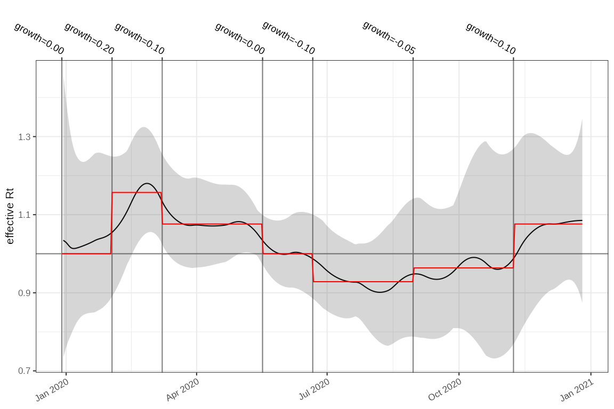

Estimating the reproduction number from weekly data
Source:vignettes/weekly-incidence.Rmd
weekly-incidence.RmdBackground
It is common for epidemic data to be aggregated into weekly, monthly
or even yearly case counts, for example the result of batching in
reporting processes. ggoutbreak has a set of infrastructure
to allow case counts to be used to estimate the reproduction number,
regardless of their periodicity.
Simulation with weekly data
We construct a very simple count model based on a time-varying growth
rate which is specified as an exponential growth in case counts per
week. The time_unit is defined here as 1 week, but this
would typically be determined by the data. ggoutbreak will
generally make an informed guess at the periodicity of data when we
construct a time_period column from dates, if it is not
stated.
In this case the simulation generates an outbreak over the course of one year with a maximum number of weekly cases around 250, resulting from an initial import of 30 infectious cases in week 0.
changes = dplyr::tribble(
~t, ~r,
0, 0,
5, 0.2,
10, 0.1,
20, 0,
25, -0.1,
35, -0.05,
45, 0.1
)
sim = sim_poisson_model(
changes = changes,
max_time = 52,
time_unit = "1 week",
fn_imports = ~ ifelse(.x == 0, 30, 0),
seed=100
)
events = attr(sim,"events")
plot_cases(sim, events = events, colour="grey60")We can go ahead and model the case rate and exponential growth rate
using a poisson model and plot them, with the parametrised growth rate
in red. In this case the time unit for both rates is per week. Although
the time unit is per week, the model output is creating an estimate per
day (controlled by the frequency parameter here), to allow
the smooth plot.
# Estimate weekly incidence and weekly exponential growth rate
incidence = sim %>% ggoutbreak::poisson_locfit_model(frequency = "1 day",deg = 2, window=5)
p1 = plot_incidence(incidence, events=events, raw = sim)
p2 = plot_growth_rate(incidence,events = events)+ggplot2::coord_cartesian(ylim=c(-0.05*7,+0.05*7))+
# The simulation data includes the parametrised growth rate:
ggplot2::geom_line(data = sim, mapping = ggplot2::aes(x=as.Date(time), y=growth), colour="red")
p1+p2+patchwork::plot_layout(ncol=1,axes="collect")+patchwork::plot_annotation(tag_levels = "A")We want to estimate the reproduction number, and for this our methods
need estimates of the daily incidence of cases, as input to the renewal
equation. To do this we rescale the temporal dimension of the model
(using rescale_model()) and we replot it. In this plot the
daily case rate is estimated to peak at just over 30 (= 250/7 approx).
The growth rate is also rescaled to account for the fact that the
exponential growth rate per day is compounded up in the per week figures
above.
# Rescale weekly to daily incidence estimates
incidence2 = incidence %>% rescale_model(time_unit = "1 day")
p1 = plot_incidence(incidence2, events=events, raw = sim)
p2 = plot_growth_rate(incidence2,events = events)+ggplot2::coord_cartesian(ylim=c(-0.05,+0.05))
p1+p2+patchwork::plot_layout(ncol=1,axes = "collect")+patchwork::plot_annotation(tag_level="A")From this we can easily use our incidence estimates and an generation time distribution to estimate the reproduction number for this time-series. To compare it we use a different method (Wallinga-Lipsitch 2007) to convert the growth rate parametrisation direct to an equivalent reproduction number. We see good agreement, and the uncertainty associated with estimates derived from weekly count data is appropriately large, and include uncertainty in the generation time.
# Convert weekly growth rate input to simulation to a reproduction number
# and ensure time scales align.
changes2 = changes %>% dplyr::transmute(
t = t*7,
R = wallinga_lipsitch(r/7, ganyani_ip_2)
)
rt_for_date = \(t) cfg_step_fn(changes2)(as.time_period(t, unit="1 day"))
# Calculate the reproduction number from daily incidence estimates
rt_estim = incidence2 %>% rt_from_incidence(ip = ganyani_ip_2,approx = TRUE)
plot_rt(rt_estim,events = events)+
ggplot2::geom_function(fun=rt_for_date,colour="red",n=nrow(rt_estim))